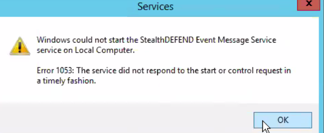

Summary: Following an upgrade in place to the latest SD version (1.2.342 at time of this KB), several service can be found stopped. Attempting to start them results in an error message: "Could not start the ... service on Local Computer. Error 1053: the service did not respond to the start or control request in a timely fashion." Despite this being an error for a timeout that should occur after 30 seconds or more, the error happens immediately.
Issue: Several services will not start upon upgrading from 1.2.341 to 1.2.342. This may affect other versions as well, but legacy releases were not tested. Any attempt to start them will result immediately in the following 1053 error message: "Could not start the ... service on Local Computer. Error 1053: the service did not respond to the start or control request in a timely fashion."

Without the ability to start all SD services, SD will not be receive events. This is possibly caused due to the services being installed in debug, not release mode.
Instructions: The simplest way to reinstall the services is using the same installer used for the upgrade. Launch the installer again, and select the 'Repair' option. It will go through a similar process as during the upgrade. Upon completion, all SD services should be running as expected.
Product: StealthDEFEND
Module: StealthDEFEND - General
Versions: 1.2
Resolved In: TBD
Legacy Article ID: 2249